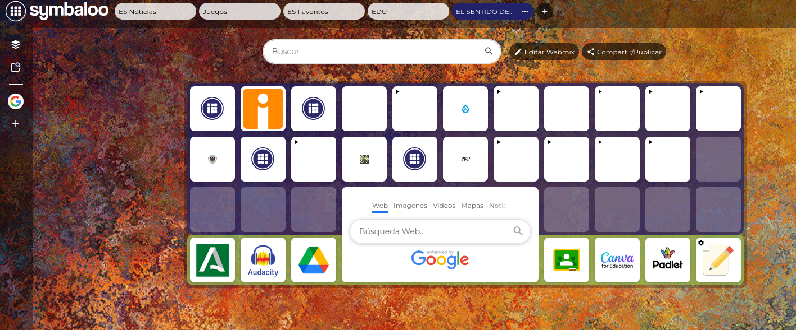

Recursos para los alumnos
En este apartado se recogen los recursos que el alumnado utilizará a lo largo del proyecto para facilitar su aprendizaje y guiar su trabajo. Se incluyen materiales explicativos, herramientas digitales y apoyos que les permitirán comprender mejor el contexto histórico, realizar las entrevistas y elaborar el producto final. Estos recursos han sido seleccionados teniendo en cuenta su nivel, con el objetivo de fomentar la autonomía, el pensamiento crítico y el uso responsable de la tecnología en el proceso de aprendizaje.
Recursos para el profesorado
Este apartado reúne una selección de recursos dirigidos al profesorado para apoyar la implementación y el desarrollo de la situación de aprendizaje en el aula. Incluye orientaciones didácticas, materiales de apoyo, instrumentos de evaluación y propuestas metodológicas que facilitan la organización del proyecto y la atención a la diversidad del alumnado. Su finalidad es ofrecer herramientas prácticas que permitan adaptar la intervención docente, mejorar el seguimiento del proceso de aprendizaje y enriquecer la experiencia educativa.
